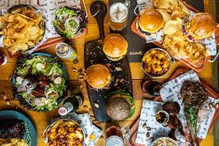
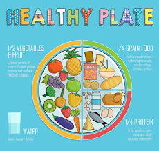
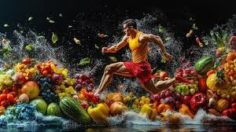

Who We Are
The Food and Balanced Diet Program is dedicated to providing scientifically accurate, easy-to-understand information about nutrition and healthy eating.
Our mission is to help individuals and communities make informed choices about their diet for better health and well-being.

Our Mission
We strive to educate, inspire, and support individuals in making **healthier food choices** by debunking myths, promoting balanced diets, and providing expert-backed resources.
Our Values

Education
We provide evidence-based nutritional information to help people make the best dietary decisions.

Health & Well-being
Promoting a balanced lifestyle with proper nutrition, exercise, and mental wellness.
Community
Building a supportive network where individuals can share and learn about nutrition.